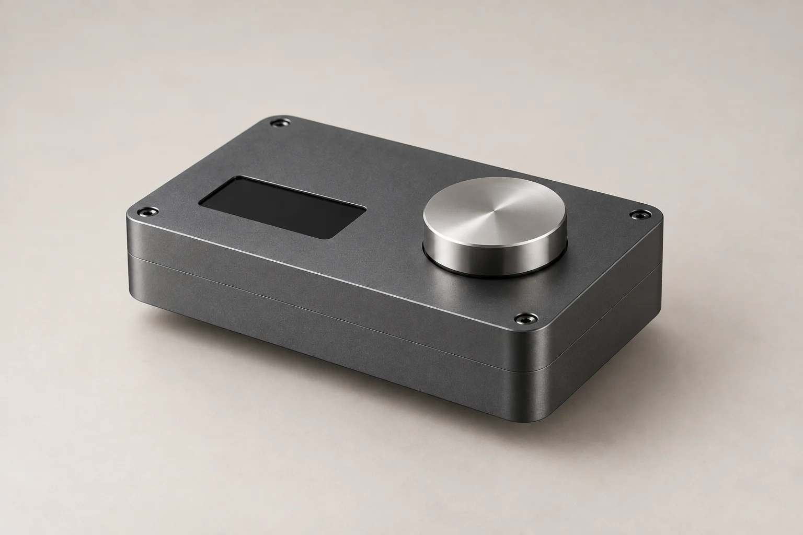

01 / Design
強みを整理して、つくる。
事業内容、対応範囲、問い合わせにつながる情報を整理。文章・写真・構成・デザインを組み合わせて、伝わるサイトを制作します。
Web design & ongoing support / AIdealize
FORM WORKSは、AIdealizeの制作ポートフォリオです。
製造業の事業・工程・強みを伝えるサイトを、
デザインから公開後の確認・改善まで支援します。
01About this work
工業製品は、完成品の写真だけでは
技術や対応範囲が伝わりきらないことがあります。
工程を見せることで、相談の手がかりをつくります。

FORM WORKS / DESIGN STUDY
この作品では、一つの機器を分解状態と完成状態で表現。訪問者が部品の役割や製作の流れを理解し、相談する内容を考えられる構成にしました。
架空ブランド・生成画像によるコンセプト作品です。実在企業の製造実績や受注成果を示すものではありません。
02Our support
見た目を整えることと、使える状態を保つこと。
どちらも、事業に役立つサイトのために。
01 / Design
事業内容、対応範囲、問い合わせにつながる情報を整理。文章・写真・構成・デザインを組み合わせて、伝わるサイトを制作します。
02 / Check
公開後の表示・リンク・フォームを確認。閲覧や問い合わせの状況を見て、どこから改善するかを一緒に考えます。
03 / Improve
内容の更新や不具合への対応に加え、確認結果に応じて見せ方と導線を改善。担当者が運用を把握できるよう共有します。
対応範囲・頻度・期間・費用は、現在のサイトとご希望を確認したうえで個別に決めます。
Let's talk about your website.
新しく作りたい。今のサイトを見直したい。
まずは、伝えたいことや困っていることから。
現在のサイトや事業内容を伺い、何を伝えたいか、何が課題かを整理するところからご相談いただけます。
使える資料・写真を確認し、必要な素材を整理します。撮影・動画制作が必要な場合は、内容と対応範囲を個別に相談します。この作品の生成画像は、実際の工場や製品の写真の代わりに実績として掲載するものではありません。
閲覧や相談ボタンのクリックと、実際の問い合わせを分けて確認します。現状の計測環境を確かめ、比較する期間と指標を決めます。成果数値を保証するものではありません。